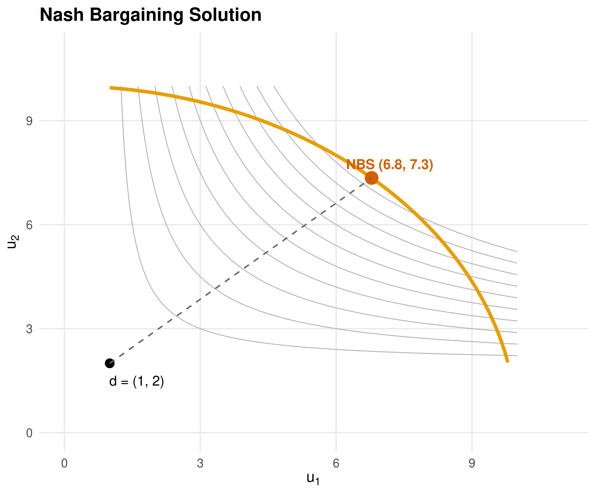

35 Bargaining Theory
Nash bargaining and ultimatum games — axiomatic solutions, alternating-offers models, and computational implementations in R.
Learning objectives
- State the four axioms of the Nash bargaining solution and derive the solution as the maximizer of the Nash product.
- Formulate the Rubinstein alternating-offers model and compute its subgame perfect equilibrium for given discount factors.
- Implement the Nash bargaining solution and Rubinstein equilibrium computations in R.
- Visualize feasible bargaining sets, Nash product contours, and equilibrium shares as functions of patience.
35.1 Motivation
A union and a firm sit across the negotiating table. The union wants higher wages; the firm wants lower labor costs. Both prefer a deal to a strike, but each wants the deal tilted in their favor. How should they split the surplus?
This question arises whenever two parties must agree on how to divide gains from trade: merger negotiations, international treaties, or even splitting a dinner bill. Game theory provides two foundational approaches. The Nash bargaining solution uses axioms to identify a unique fair division. The Rubinstein alternating-offers model derives the same outcome from a non-cooperative bargaining protocol where impatience drives agreement.
35.2 Theory
35.2.1 The bargaining problem
A bargaining problem is a pair \((S, d)\) where \(S \subset \mathbb{R}^2\) is a compact, convex set of feasible payoff pairs and \(d = (d_1, d_2) \in S\) is the disagreement point — the payoffs each player receives if no agreement is reached. The set of individually rational outcomes is \(\{(u_1, u_2) \in S : u_1 \geq d_1, u_2 \geq d_2\}\).
35.2.2 Nash bargaining solution
Definition: Nash Bargaining Solution
The Nash bargaining solution selects the feasible payoff pair that maximizes the Nash product:
\[\begin{equation} (u_1^*, u_2^*) = \arg\max_{(u_1, u_2) \in S} (u_1 - d_1)(u_2 - d_2) \tag{35.1} \end{equation}\]
subject to \(u_1 \geq d_1\) and \(u_2 \geq d_2\).
Nash (1950) showed this is the unique solution satisfying four axioms:
- Pareto efficiency — no feasible outcome makes both players strictly better off.
- Symmetry — if the problem is symmetric, the solution gives equal payoffs.
- Independence of irrelevant alternatives (IIA) — removing feasible outcomes that are not chosen does not change the solution.
- Scale invariance — the solution is invariant to positive affine transformations of utility.
For a linear frontier \(u_1 + u_2 = v\) with disagreement point \((0, 0)\), the Nash bargaining solution gives each player \(v / 2\) — an equal split.
35.2.3 Asymmetric Nash bargaining
When players have different bargaining powers \(\alpha\) and \(1 - \alpha\) (with \(\alpha \in (0, 1)\)), the asymmetric Nash bargaining solution maximizes the generalized Nash product:
\[\begin{equation} (u_1^*, u_2^*) = \arg\max_{(u_1, u_2) \in S} (u_1 - d_1)^\alpha (u_2 - d_2)^{1-\alpha} \tag{35.2} \end{equation}\]
35.2.4 Rubinstein alternating-offers model
Rubinstein (1982) modeled bargaining as a sequential game. Two players take turns proposing how to split a surplus of size 1. Player 1 proposes in odd periods, Player 2 in even periods. Each player has a discount factor \(\delta_i \in (0, 1)\) — waiting is costly.
Theorem: Rubinstein Equilibrium
The unique subgame perfect equilibrium of the alternating-offers game gives Player 1 a share:
\[\begin{equation} x_1^* = \frac{1 - \delta_2}{1 - \delta_1 \delta_2} \tag{35.3} \end{equation}\]
and Player 2 receives \(1 - x_1^*\). When \(\delta_1 = \delta_2 = \delta\), the split converges to \((1/2, 1/2)\) as \(\delta \to 1\).
The intuition is that a more patient player (higher \(\delta\)) obtains a larger share because they can credibly wait longer. The first-mover advantage shrinks as both players become more patient.
35.3 Implementation in R
35.3.1 Nash bargaining solution computation
nash_bargaining <- function(frontier_fn, d = c(0, 0), alpha = 0.5,
n_grid = 1000, u1_max = NULL) {
if (is.null(u1_max)) {
# Find where frontier_fn(u1) drops to d[2] by searching adaptively
hi <- d[1] + 1
while (is.finite(frontier_fn(hi)) && frontier_fn(hi) > d[2] && hi < 1e6) hi <- hi * 2
u1_upper <- uniroot(function(u1) frontier_fn(u1) - d[2],
c(d[1], min(hi, 1e6)))$root
} else {
u1_upper <- u1_max
}
u1_seq <- seq(d[1], u1_upper, length.out = n_grid)
u2_seq <- frontier_fn(u1_seq)
valid <- u1_seq >= d[1] & u2_seq >= d[2]
u1_seq <- u1_seq[valid]
u2_seq <- u2_seq[valid]
nash_product <- (u1_seq - d[1])^alpha * (u2_seq - d[2])^(1 - alpha)
idx <- which.max(nash_product)
list(u1 = u1_seq[idx], u2 = u2_seq[idx],
nash_product = nash_product[idx],
frontier = tibble(u1 = u1_seq, u2 = u2_seq, np = nash_product))
}
# Example: linear frontier u1 + u2 = 10, disagreement (1, 2)
frontier <- function(u1) 10 - u1
result <- nash_bargaining(frontier, d = c(1, 2))
cat(sprintf("Nash bargaining solution: (%.2f, %.2f)\n", result$u1, result$u2))#> Nash bargaining solution: (4.50, 5.50)#> Nash product: 3.500035.3.2 Nash bargaining visualization
# Concave frontier: u2 = sqrt(100 - u1^2) (quarter-circle, radius 10)
frontier_concave <- function(u1) sqrt(pmax(100 - u1^2, 0))
d_point <- c(1, 2)
sol <- nash_bargaining(frontier_concave, d = d_point, u1_max = 10)
# Nash product contour grid
grid_data <- expand_grid(u1 = seq(0, 10, length.out = 200),
u2 = seq(0, 10, length.out = 200)) |>
mutate(np = ifelse(u1 >= d_point[1] & u2 >= d_point[2],
(u1 - d_point[1]) * (u2 - d_point[2]), NA))
p_nash <- ggplot() +
geom_contour(data = grid_data, aes(x = u1, y = u2, z = np),
colour = "grey70", linewidth = 0.3,
breaks = seq(2, 30, by = 3)) +
geom_line(data = sol$frontier, aes(x = u1, y = u2),
colour = okabe_ito[1], linewidth = 1.2) +
geom_point(aes(x = sol$u1, y = sol$u2),
colour = okabe_ito[6], size = 4) +
geom_point(aes(x = d_point[1], y = d_point[2]),
colour = "black", size = 3, shape = 16) +
geom_segment(aes(x = d_point[1], y = d_point[2],
xend = sol$u1, yend = sol$u2),
linetype = "dashed", colour = "grey40") +
annotate("text", x = sol$u1 + 0.4, y = sol$u2 + 0.4,
label = sprintf("NBS (%.1f, %.1f)", sol$u1, sol$u2),
size = 3.5, colour = okabe_ito[6], fontface = "bold") +
annotate("text", x = d_point[1] + 0.6, y = d_point[2] - 0.5,
label = sprintf("d = (%d, %d)", d_point[1], d_point[2]),
size = 3.5) +
scale_x_continuous(name = expression(u[1]), limits = c(0, 11)) +
scale_y_continuous(name = expression(u[2]), limits = c(0, 11)) +
theme_publication() +
labs(title = "Nash Bargaining Solution")
p_nash
Figure 35.1: Nash bargaining solution for a concave feasible frontier. The orange curve marks the Pareto frontier. Grey contours show the Nash product. The red point is the Nash bargaining solution and the black point is the disagreement outcome.
save_pub_fig(p_nash, "nash-bargaining-solution", width = 6, height = 5)35.3.3 Rubinstein alternating-offers model
rubinstein_equilibrium <- function(delta1, delta2) {
x1 <- (1 - delta2) / (1 - delta1 * delta2)
x2 <- 1 - x1
list(share1 = x1, share2 = x2, delta1 = delta1, delta2 = delta2)
}
# Example: symmetric discounting
eq_sym <- rubinstein_equilibrium(0.9, 0.9)
cat(sprintf("Symmetric (delta=0.9): Player 1 gets %.4f, Player 2 gets %.4f\n",
eq_sym$share1, eq_sym$share2))#> Symmetric (delta=0.9): Player 1 gets 0.5263, Player 2 gets 0.4737
# Asymmetric: Player 1 more patient
eq_asym <- rubinstein_equilibrium(0.95, 0.8)
cat(sprintf("Asymmetric (d1=0.95, d2=0.8): Player 1 gets %.4f, Player 2 gets %.4f\n",
eq_asym$share1, eq_asym$share2))#> Asymmetric (d1=0.95, d2=0.8): Player 1 gets 0.8333, Player 2 gets 0.166735.4 Worked example
35.4.1 Labor-management negotiation
A firm and its union bargain over how to split a surplus of $10 million generated by a new contract. If negotiations fail, the firm earns $2 million from replacement workers and the union’s members earn $1 million from outside options. The union’s bargaining power is \(\alpha = 0.6\) due to strong labor laws.
Step 1: Set up the bargaining problem.
surplus <- 10
d_firm <- 2 # disagreement payoff: firm
d_union <- 1 # disagreement payoff: union
alpha <- 0.6 # union bargaining power
# Linear frontier: u_firm + u_union = surplus
# Nash product: (u_firm - d_firm)^(1-alpha) * (u_union - d_union)^alphaStep 2: Solve analytically. For a linear frontier \(u_f + u_u = V\) the asymmetric NBS has a closed-form solution:
\[ u_u^* = d_u + \alpha(V - d_f - d_u), \quad u_f^* = d_f + (1-\alpha)(V - d_f - d_u) \]
net_surplus <- surplus - d_firm - d_union
u_union <- d_union + alpha * net_surplus
u_firm <- d_firm + (1 - alpha) * net_surplus
cat(sprintf("Net surplus: $%.0fM\n", net_surplus))#> Net surplus: $7M
cat(sprintf("Union payoff: $%.1fM (disagree) + $%.1fM = $%.1fM\n",
d_union, alpha * net_surplus, u_union))#> Union payoff: $1.0M (disagree) + $4.2M = $5.2M
cat(sprintf("Firm payoff: $%.1fM (disagree) + $%.1fM = $%.1fM\n",
d_firm, (1 - alpha) * net_surplus, u_firm))#> Firm payoff: $2.0M (disagree) + $2.8M = $4.8M#> Union wage share: 52%Step 3: Verify with numerical solver.
frontier_linear <- function(u_union) surplus - u_union
sol_labor <- nash_bargaining(frontier_linear, d = c(d_union, d_firm),
alpha = alpha)
cat(sprintf("Numerical NBS: union = $%.2fM, firm = $%.2fM\n",
sol_labor$u1, sol_labor$u2))#> Numerical NBS: union = $5.20M, firm = $4.80MStep 4: Rubinstein interpretation. If bargaining rounds occur weekly with annual discount rates \(r_f = 0.05\) and \(r_u = 0.10\), the weekly discount factors are:
delta_firm <- exp(-0.05 / 52)
delta_union <- exp(-0.10 / 52)
eq_labor <- rubinstein_equilibrium(delta_union, delta_firm)
cat(sprintf("Weekly discount factors: union = %.6f, firm = %.6f\n",
delta_union, delta_firm))#> Weekly discount factors: union = 0.998079, firm = 0.999039#> Rubinstein share: union = 0.3337, firm = 0.6663#> Union gets $3.34M of the $10M surplusThe more patient firm (lower discount rate) captures a larger share, consistent with the Rubinstein insight that patience is power in bargaining.
35.5 Extensions
- Outside options can shift the disagreement point and change the Nash bargaining solution. See Osborne (2004) (Chapter 15) for models where players can exit bargaining.
- Incomplete information about the opponent’s discount factor or reservation value leads to delay and inefficiency; see Kennan & Wilson (1993) for a survey.
- Multi-party bargaining extends these ideas to legislatures and coalitions, connecting to the Shapley value (??).
- Behavioral bargaining — ultimatum game experiments consistently show that proposers offer 40–50% rather than the minimal amount predicted by backward induction, suggesting fairness norms matter.
Exercises
Asymmetric Nash bargaining. Two countries negotiate over fishing rights with a frontier given by \(u_2 = 12 - 1.5 u_1\) and disagreement point \((1, 1)\). Country 1 has bargaining power \(\alpha = 0.4\). Compute the Nash bargaining solution analytically and verify it with the
nash_bargaining()function. How does the solution change if \(\alpha = 0.7\)?Patience and power. In the Rubinstein model, suppose Player 1 has \(\delta_1 = 0.9\). Find the value of \(\delta_2\) at which the surplus is split equally. Plot Player 1’s share as \(\delta_2\) varies from 0.5 to 0.99 and verify your answer graphically.
Ultimatum game. The ultimatum game is a Rubinstein model with one round: Player 1 proposes a split and Player 2 accepts or rejects. Show analytically that the SPE has Player 1 offering the minimal acceptable amount. Then simulate 1,000 ultimatum games where Player 2 rejects offers below a threshold drawn uniformly from \([0, 0.5]\). Plot the proposer’s expected payoff as a function of the offer.
Solutions appear in D.